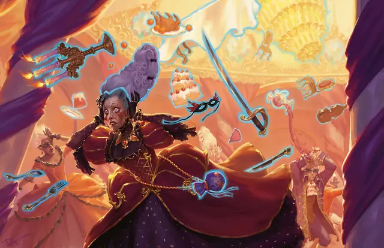

Полтергейст
Poltergeist
Средняя или Маленькая Нежить, Хаотичная Нейтральная

Класс Защиты 12 Инициатива +2 (12)
Хиты 22 (5к8)
Скорость 5 футов, Полёта 50 футов (парит)
| мод | спас | ||
|---|---|---|---|
| СИЛ | 1 | −5 | −5 |
| ЛОВ | 14 | +2 | +2 |
| ТЕЛ | 11 | +0 | +0 |
| мод | спас | ||
|---|---|---|---|
| ИНТ | 10 | +0 | +0 |
| МДР | 10 | +0 | +0 |
| ХАР | 14 | +2 | +2 |
Сопротивление урону Дробящий, Колющий, Рубящий, Звук, Кислота, Огонь, Холод, Электричество
Иммунитеты Некротический, Яд; Бессознательный, Истощение, Окаменевший, Опрокинутый, Опутанный, Отравленный, Очарованный, Парализованный, Схваченный
Чувства Тёмное зрение 60 футов, пассивное Восприятие 10
Языки Общий
Опасность 2 (450 опыта; БВ +2)
Особенности
Бестелесное перемещение. Полтергейст может перемещаться через других существ и объекты, как если бы они были Труднопроходимой местностью. Он получает 5 (1к10) Силового урона, если завершает свой ход внутри объекта.
Действия
Мультиатака. Полтергейст совершает один Ударом объектом и использует Телекинетический толчок.
Удар объектом. Бросок рукопашной или дальнобойной атаки: +4, досягаемость 5 фт. или дистанция 30 фт. Попадание: 7 (2к4 + 2) Дробящего урона.
Телекинетический толчок. Спасбросок Силы: Сл 12, одно видимое полтергейстом существо в пределах 30 футов. Провал: 9 (2к6 + 2) Силового урона, и цель отталкивается на расстояние до 30 футов по прямой от полтергейста.
Бонусные действия
Исчезновение. Полтергейст наделяет себя состоянием Невидимый или оканчивает это состояние на себе.
Бонус мастерства +2
Среда обитания Город, Подземье
Сокровища Любые
Полтергейст
Зловредный или озорной дух
Полтергейсты — это духи, что сбивают с толку и терзают живых. Обычно они невидимы, но порой предстают блёклыми образами тех, кем были при жизни. Одни полтергейсты не осознаю́т, что мертвы, и по привычке повторяют то, что делали в прошлой жизни. Другие — злобные сущности или воплощения расколотой психики, сеющие раздор в местах своего обитания.
Полтергейсты телекинетически двигают предметы там, где селятся. Совершите бросок по таблице «Проделки полтергейста» или определите сами, как именно полтергейст изводит живых.
Проделки полтергейста
| к8 | Чтобы мучить живых, полтергейст… |
| 1 | Снова и снова возвращает выброшенную вещь. |
| 2 | Оставляет следы на вертикальных поверхностях. |
| 3 | Издаёт звуки, словно кто-то замурован в стене. |
| 4 | Раскладывает содержимое сумок по всему полу. |
| 5 | Игриво управляет трупом или куклой как марионеткой. |
| 6 | Стаскивает простыни и одеяла со спящих. |
| 7 | Втыкает ножи или оружие в потолок. |
| 8 | Жутковато складывает книги, мебель или утварь. |